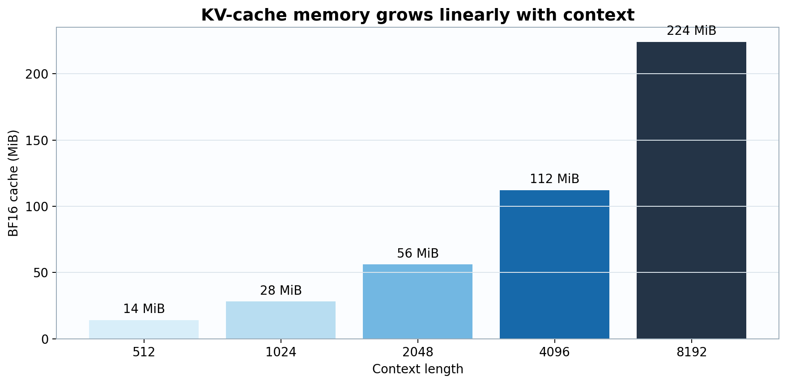

Training teaches the model; inference is the moment we actually ask it for something. The parameters are unchanged, but the execution profile is different. Training processes many token positions in parallel and exposes large matrix multiplications with high accelerator utilization. Autoregressive generation usually emits one token, appends it to the context, and launches the next decode step. Autocomplete is patient; users are less famous for that quality.
Inference therefore depends on time to first token, inter-token latency, HBM memory bandwidth, arithmetic intensity, model format, and device-memory capacity. Arithmetic intensity is the number of arithmetic operations performed per byte transferred from memory. Batch-one decode has low arithmetic intensity because it repeatedly reads model weights and KV-cache entries for relatively little computation; it is commonly memory-bandwidth-bound. Quantization reduces weight traffic, while the KV cache and runtime determine additional memory and latency costs.
Prefill sets \(T_q=T\): it processes all prompt positions in parallel, computes attention over the prompt, and materializes the initial keys and values. Decode sets \(T_q=1\): each layer computes one new query while reading keys and values for the complete cached context. With grouped-query attention, the BF16 cache is
\[M_{KV}=2LBh_{kv}dTs.\]
For batch \(B=1\),
\[M_{KV}=2(28)(1)(2)(128)(8192)(2)=234{,}881{,}024\text{ bytes}\approx224\text{ MiB}.\]
The device-memory budget contains model weights, KV-cache tensors, temporary activations, and runtime workspaces. At batch one, every decode step streams the weights and growing KV cache through the memory hierarchy. The low ratio of floating-point operations to transferred bytes makes sustained HBM bandwidth, rather than peak FLOP/s, the common throughput limit.
For each layer, dense projections and the feed-forward network scale linearly with prompt length, while exact attention scales quadratically:
\[C_{\mathrm{prefill}}=O\!\left(BT(2D^2+2Dh_{kv}d+3DD_{ff})+Bh_qT^2d\right).\]
Prefill exposes matrix-matrix products over \(T\) positions and can achieve comparatively high arithmetic intensity. Its latency determines time to first token together with tokenization, host-to-device transfer, and runtime launch overhead.
At one decode step, \(T_q=1\). Projection and feed-forward work no longer scale with current context, but attention must read all cached keys and values:
\[C_{\mathrm{decode}}=O\!\left(B(2D^2+2Dh_{kv}d+3DD_{ff})+Bh_qTd\right).\]
For \(G_{\mathrm{dec}}\) generated tokens after prompt length \(T_0\), total attention work is proportional to
\[\sum_{g=1}^{G_{\mathrm{dec}}}(T_0+g-1)=G_{\mathrm{dec}}T_0+\frac{G_{\mathrm{dec}}(G_{\mathrm{dec}}-1)}{2}.\]
Generation is therefore linear in prompt length per new token and quadratic in generated length when summed over a long continuation.
Let \(S_w\) be bytes of weights read per decode step, \(S_{KV}(T)\) bytes of cache traffic, and \(\mathrm{BW}_{\mathrm{HBM}}\) sustained memory bandwidth. A bandwidth-only latency lower bound is
\[t_{\mathrm{token}}\ge\frac{S_w+S_{KV}(T)}{\mathrm{BW}_{\mathrm{HBM}}}.\]
BF16 MyLLM weights occupy approximately \(2N=2.11\) GB before metadata. At batch one, little weight reuse exists across independent sequences, so quantizing weights reduces both capacity demand and mandatory HBM traffic. This is why quantization can improve decode speed even when the hardware has abundant peak FLOP/s.

Figure 1. With fixed layers, KV heads, and head dimension, cache memory scales linearly from 14 MiB at 512 tokens to 224 MiB at 8,192.
Hugging Face Transformers is the native Python interface for loading, running, fine-tuning, and serving the trained model. It combines the model architecture, tokenizer, special tokens, and chat template so prompts are encoded exactly as expected by the model.
This is the preferred path for GPU-backed inference, experimentation, and production deployments that benefit from PyTorch, batching, streaming, and optimized serving frameworks.
GGUF is a portable inference format for distributing the same trained model across laptops, phones, and workstations. It can store the model in raw BF16 form for maximum numerical fidelity, or in quantized variants such as Q8 and Q4 to reduce memory use for local deployment.
| Artifact | Trade-off |
|---|---|
| MyLLM-1B.gguf | BF16 weights; largest footprint and the closest numerical representation of the original trained checkpoint. |
| MyLLM-1B-Q8_0.gguf | Eight-bit quantized weights; about \(1.1\) GB of raw weights before metadata, KV cache, and runtime buffers. A good balance of quality and local memory use. |
| MyLLM-1B-Q4_K_M.gguf | Mixed four-bit K-quant weights; about \(0.55\) GB of raw weights before metadata, KV cache, and runtime buffers. More portable, with a stronger compression trade-off. |
Figure 2. Approximate raw weight storage for BF16, Q8, and Q4 GGUF variants of the same trained model, before metadata, KV cache, and runtime buffers.
GGUF allows one model to be served locally without a full Python deployment. BF16 is appropriate for high-memory workstations and servers; Q8 offers higher-quality local inference with lower memory requirements; and Q4 makes the model practical on consumer laptops and mobile-class devices.
GGUF models can also be loaded with Ollama to provide a complete local graphical chat interface. This offers a private, self-contained way to run the model on a personal machine while retaining a familiar chat workflow.
Quantization stores an approximation of the original floating-point weights using fewer bits. For a block of real weights \(w\), a simple symmetric \(b\)-bit quantizer chooses a scale \(\alpha>0\) and integer codes:
\[ q_i=\operatorname{clip}\!\left( \operatorname{round}(w_i/\alpha), -2^{b-1}, 2^{b-1}-1 \right), \qquad \widehat w_i=\alpha q_i. \]
The quantization error is \(e_i=w_i-\widehat w_i\). Blockwise schemes use separate scales for groups of weights so that a large outlier does not reduce precision across the entire tensor. K-quants use structured blocks and mixed treatment of sub-blocks; their true size includes codes, scales, and metadata rather than exactly \(bN/8\) bytes.
Ignoring metadata, a model with \(N=1.055\) billion parameters requires approximately:
\[ S_{\mathrm{BF16}}=2N\approx2.11\text{ GB}, \qquad S_{\mathrm{Q8}}=N\approx1.06\text{ GB}, \qquad S_{\mathrm{Q4}}=N/2\approx0.53\text{ GB}. \]
Quantization reduces model-weight storage and memory bandwidth, but it does not automatically reduce the KV cache. Available memory must still cover model weights, tokenizer and metadata, the KV cache for the selected context length, and runtime buffers.
GGUF models can also be used through Ollama, which provides a simple local runtime and a full desktop-style chat experience through compatible GUI clients. This makes it easy to run the model privately on a laptop or workstation without managing a Python environment or a remote server.
Quantized GGUF variants make local deployment practical on consumer hardware. Lower-bit formats reduce model-weight memory, while higher-precision variants trade additional memory for lower quantization error. Available RAM must still cover the model weights, the KV cache for the selected context length, and runtime overhead.